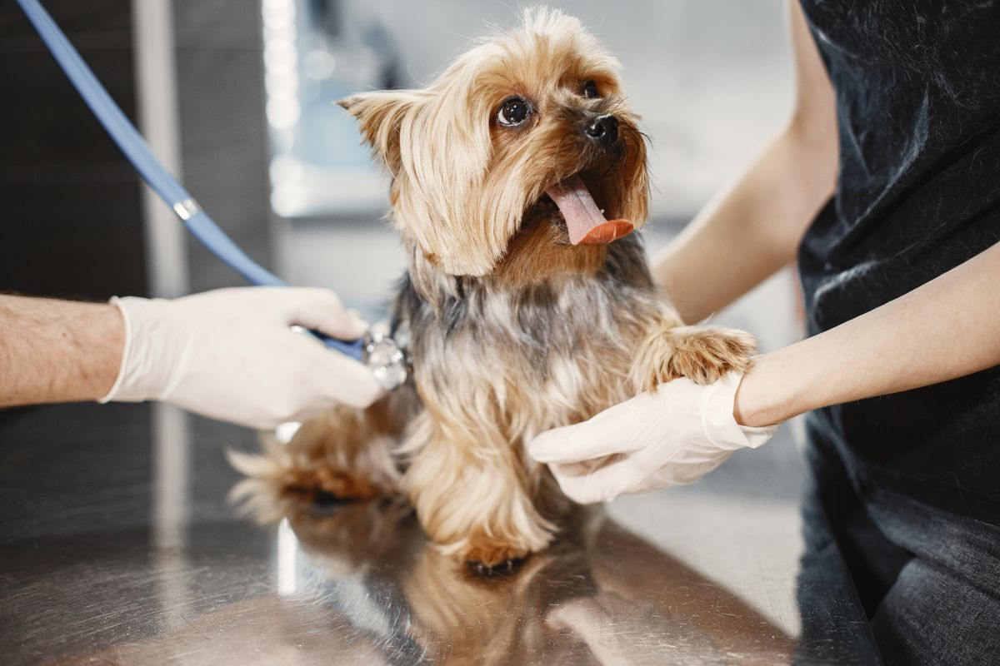
Consultas gerais
Avaliação completa, diagnóstico e plano de tratamento para cada fase da vida.
Agendar consultaClínica veterinária · Jataí-GO
Consultas, exames, cirurgia e internação para o seu cão e gato — e emergência a qualquer hora, porque cada minuto importa.
5,0 no Google · 82 avaliações de tutores de Jataí
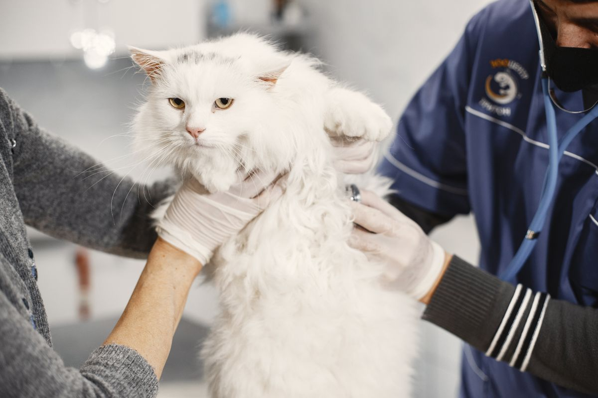
Aconteceu algo com seu pet?
Quem somos
Uma equipe apaixonada pelos animais, em instalações aconchegantes pensadas para deixar cães e gatos mais calmos — porque eles fazem parte da família.
Especialidades: clínica geral, oncologia, dermatologia, cirurgia e anestesia, internação 24h e nutrição.
Responsável técnico: nome a definir · CRMV a definir
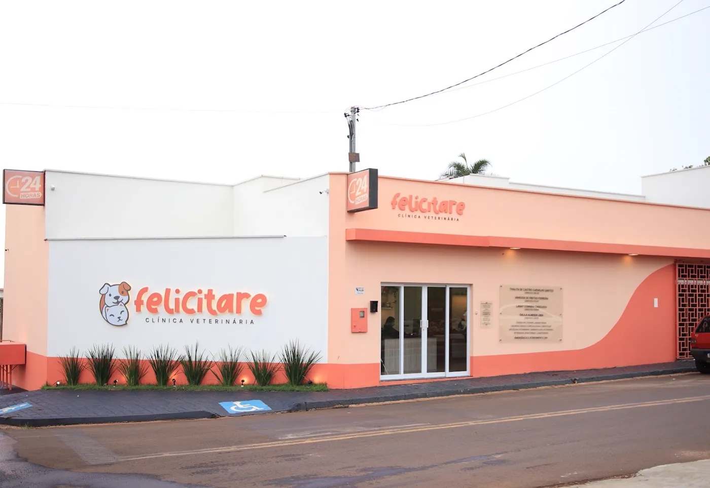
Conheça a Felicitare
Clínica reinaugurada, com recepção acolhedora, salas de atendimento, centro cirúrgico e internação — tudo no mesmo lugar, aberto 24 horas.
Serviços
Atendemos somente cães e gatos, com foco e estrutura para cada caso.

Avaliação completa, diagnóstico e plano de tratamento para cada fase da vida.
Agendar consulta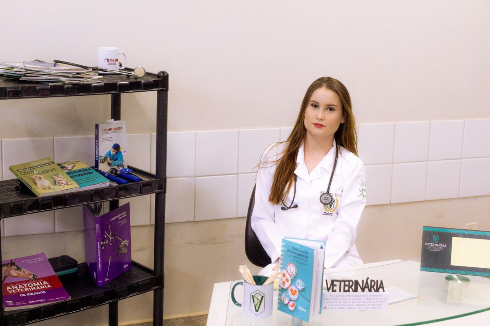
Dermatologia, oncologia e outras especialidades para casos que pedem olhar de especialista.
Falar sobre o caso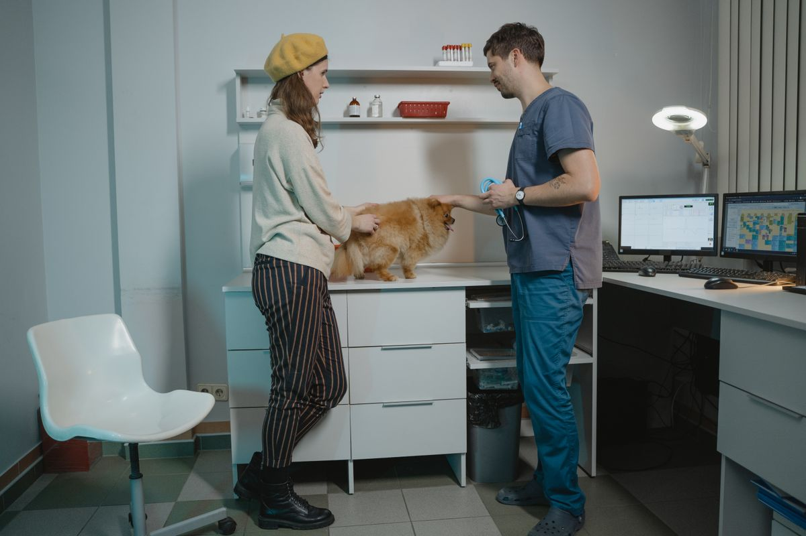
Centro cirúrgico com anestesia monitorada e acompanhamento no pós-operatório.
Tirar dúvidas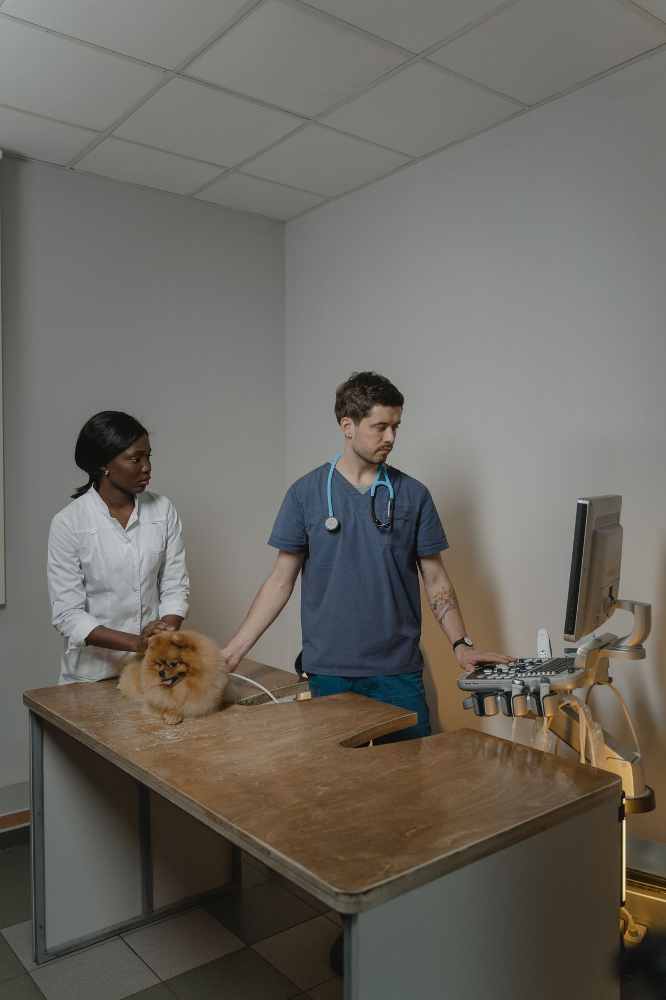
Ultrassom e raio-x no local, com resultado para agilizar o diagnóstico.
Agendar exame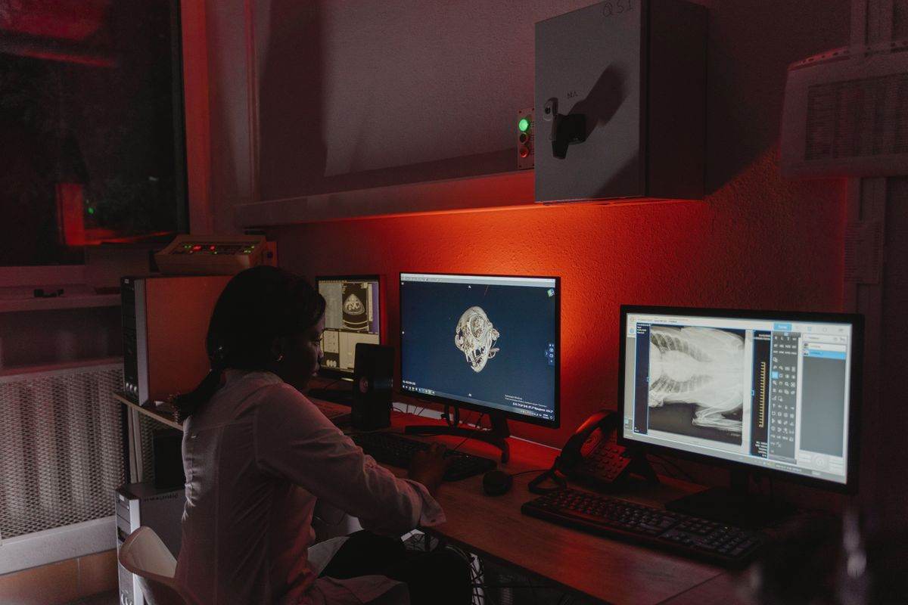
Sangue, urina e outros exames para confirmar o diagnóstico com segurança.
Pedir exame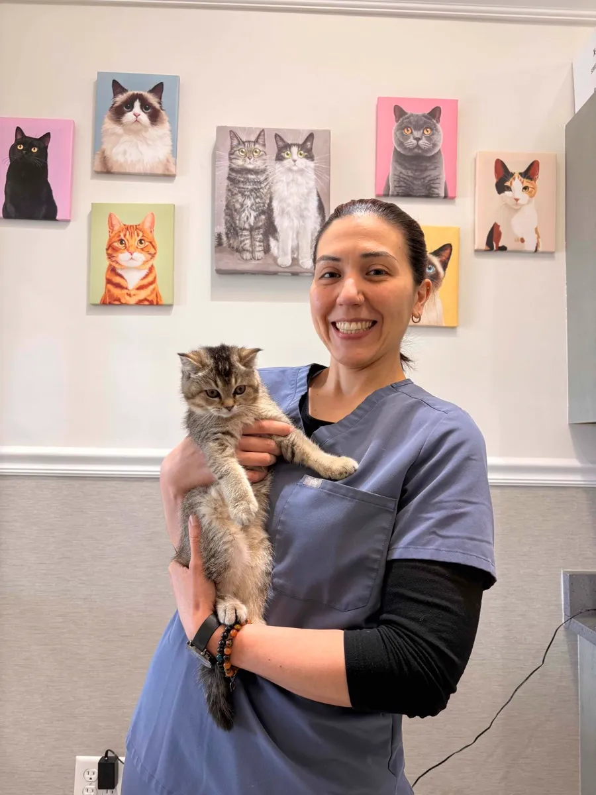
Recuperação acompanhada pela equipe dia e noite, com você informado.
Saber maisOdontologia para prevenir dor, mau hálito e perda dentária no seu pet.
Agendar avaliação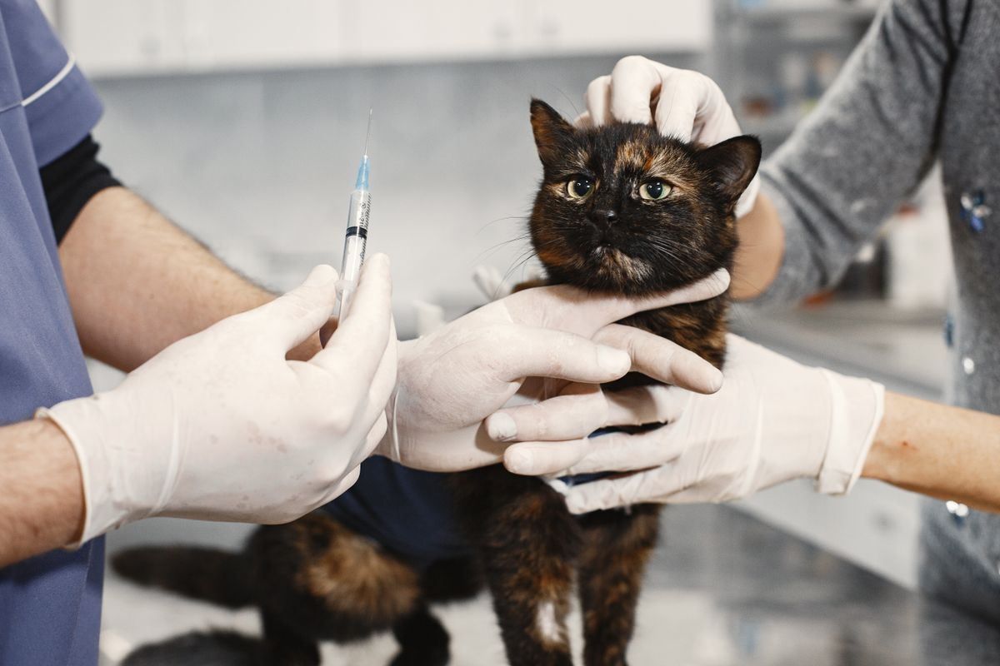
Vacinas de filhote e reforço anual, com carteirinha em dia.
Marcar vacinaProcedimento seguro, com orientação antes e acompanhamento depois.
Falar sobre castraçãoPlantão / Emergência 24h
Dia ou madrugada, sua emergência é atendida. Em uma urgência, cada minuto importa — e a equipe está aqui.
Agende pelo WhatsApp
Monte a mensagem em segundos. A gente responde e confirma o melhor horário.
Produtos
Peça pelo WhatsApp. entrega a definir.
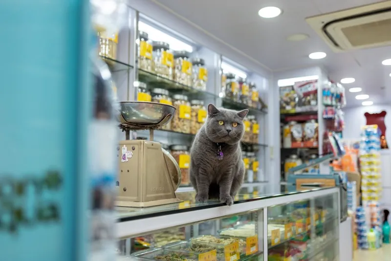
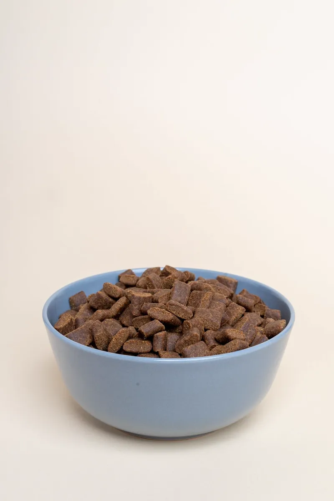
Ração por idade e porte, além de itens do dia a dia do seu pet.
Pedir pelo WhatsAppQuem atendemos
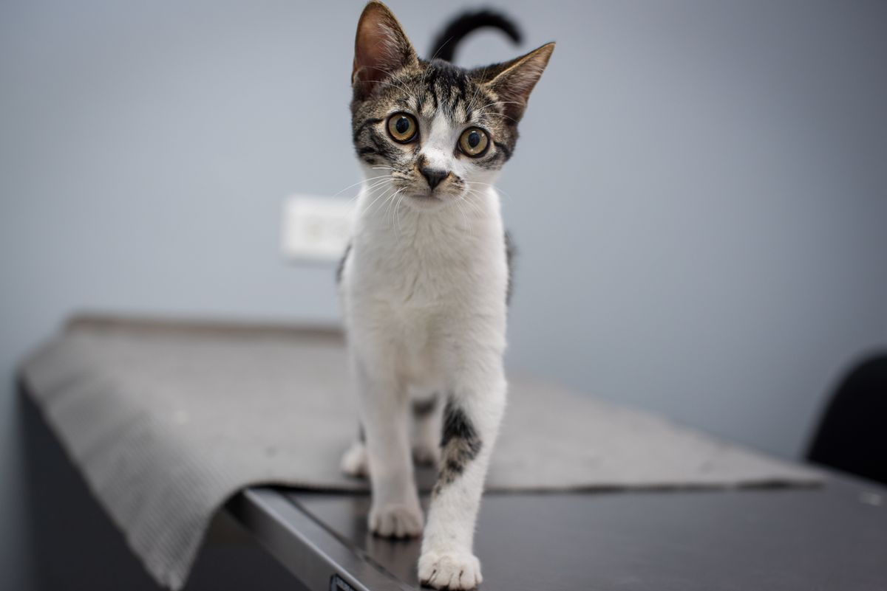
O que dizem os tutores
5,0 · 82 avaliações no Google
Ótimo atendimento! Equipe muito profissional, atenciosa e comprometida. Ambiente organizado e muito carinho com os animais. Melhor clínica de Jataí!
Excelente atendimento de toda a equipe, fomos bem acolhidos, corpo técnico preparado para cuidar bem dos nossos filhos de 4 patas, ótima estrutura física.
Profissionais excepcionais, nos sentimos muito bem atendidas. Minha pet se sentiu em casa. Recomendo a todos!
Atendimento excelente! Profissionais de altíssima qualidade, cuidado magnífico com nossos pets, produtos de primeira linha.
Pra mim é a melhor clínica de Jataí.
Dúvidas frequentes
Sim. Temos plantão 24 horas, todos os dias. Em uma emergência, chame no WhatsApp (64) 99917-1102 ou ligue (64) 3631-0842.
Para consultas de rotina, sim — assim garantimos seu horário. Emergências são atendidas na hora, sem agendamento.
Sim, cães e gatos. Temos cuidado especial para reduzir o estresse do gato durante o atendimento.
R. 012, nº 72, Setor das Mansões, Jataí-GO, próximo ao Colégio Êxito.
a definir — pergunte à nossa equipe pelo WhatsApp.
Sim: ultrassom, raio-x e exames laboratoriais na própria clínica, o que agiliza o diagnóstico.
Horário e endereço
Veja o horário
Fora desses horários, o plantão 24h atende emergências.
R. 012, nº 72, Setor das MansõesMapa ilustrativo — link do Google Maps a definir
Dicas de cuidado e novidades da clínica nas nossas redes.